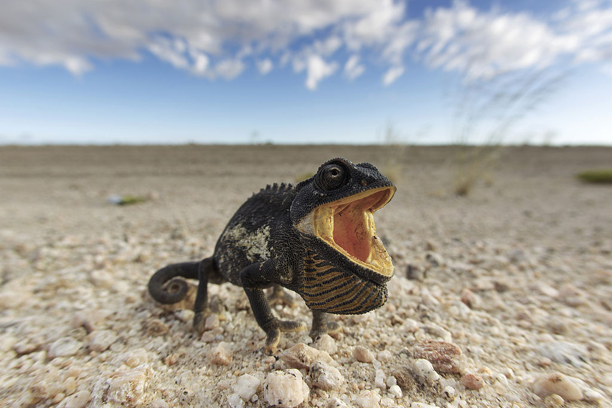
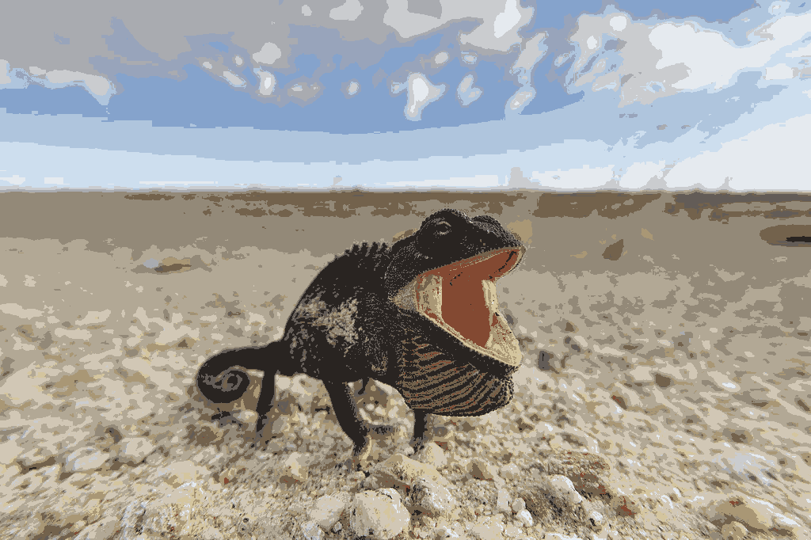
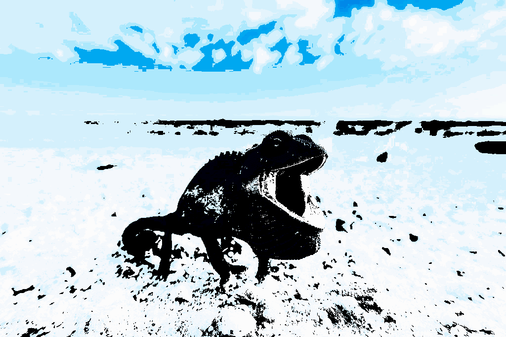
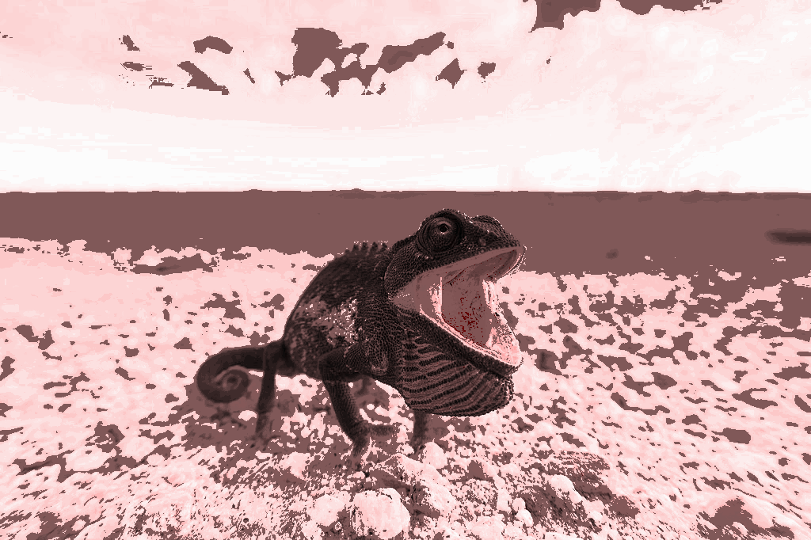
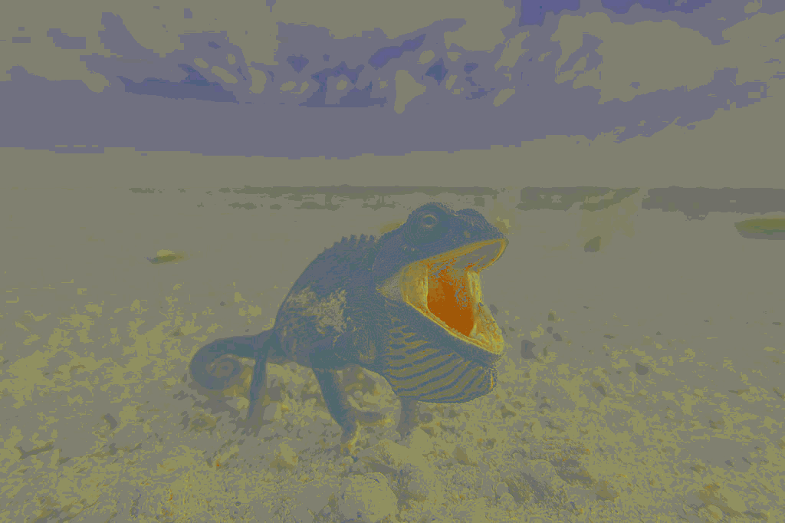
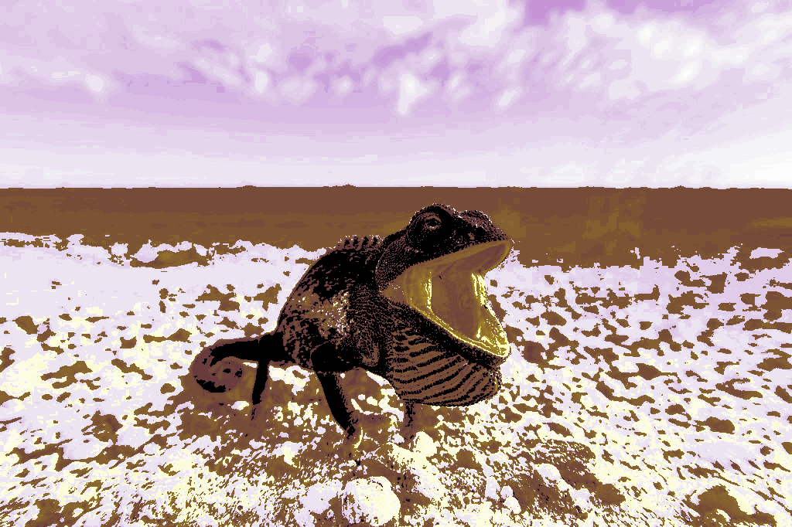
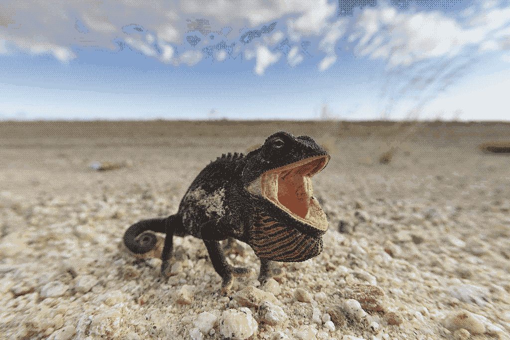

| Representación |
Tamaño
fichero (kB) |
Comentarios acerca calidad |
| Verdadero color |
|
La de referencia. |
| Paleta óptima 256 colores (SIN difuminado) |
683kB |
Muy buena calidad, similar a la original. |
| Paleta blues 256 colores (SIN difuminado) |
682kB |
No es de buena calidad, usa solo ciertos tonos. |
| Paleta reds 256 colores (SIN difuminado) |
682kB |
No es de buena calidad, usa solo ciertos tonos. |
| Paleta plasma 256 colores (SIN difuminado) |
682kB |
No es de buena calidad, usa solo ciertos tonos. |
| Paleta royal 256 colores (SIN difuminado) |
682kB |
No es de buena calidad, usa solo ciertos tonos. |
| Paleta óptima 16 colores (SIN difuminado) |
341kB |
No es de buena calidad, solo 16 colores de imagen muy diferente al original. |
| Paleta óptima 16 colores (CON difuminado Floyd-Steinberg(notmal)) |
341kB |
No es de buena calidad, mejor que optima con 16 colores. Con difuminado Floyd-Steinberg puedes mejorar la calidad. |
| Paleta óptima 16 colores (CON difuminado posicionado) |
341kB |
No es de buena calidad, mejor que optima con 16 colores. Pejor que difuminado Floyd-Steinberg |
1 / 9

Chamaeleo namaquensis original
2 / 9
Chamaeleo namaquensis 256bits optima
3 / 9

Chamaeleo namaquensis 16bits
4 / 9

Chamaeleo namaquensis blues
5 / 9

Chamaeleo namaquensis reds
6 / 9

Chamaeleo namaquensis plasma
7 / 9

Chamaeleo namaquensis royal
8 / 9
Chamaeleo namaquensis 16bits difuminado Floyd-Steinberg(normal)
9 / 9

Chamaeleo namaquensis 16bits difuminado posicionado
❮
❯
{kind=link}
{kind=link}
{kind=link}
{kind=link}
{kind=link}
{kind=link}